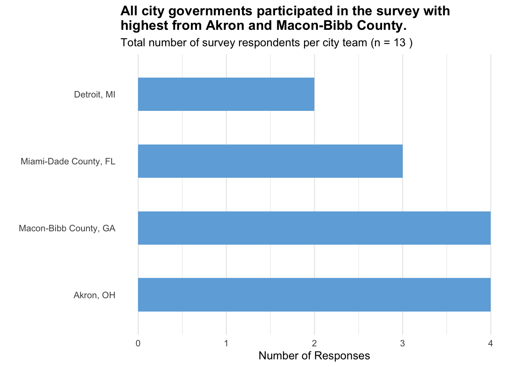
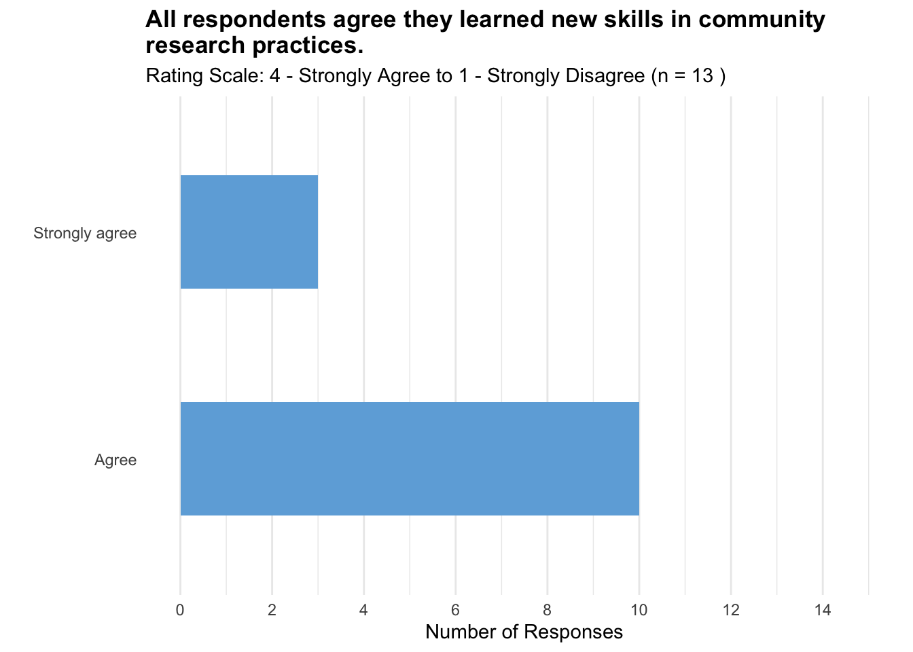
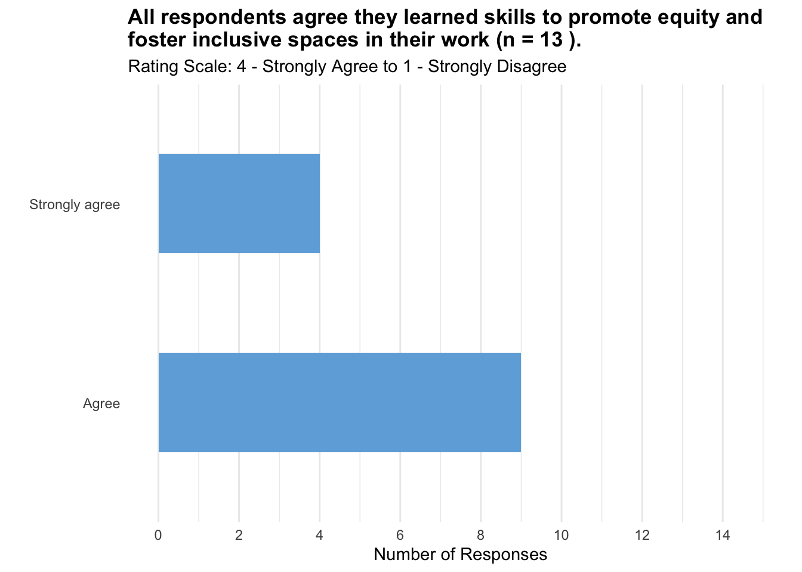
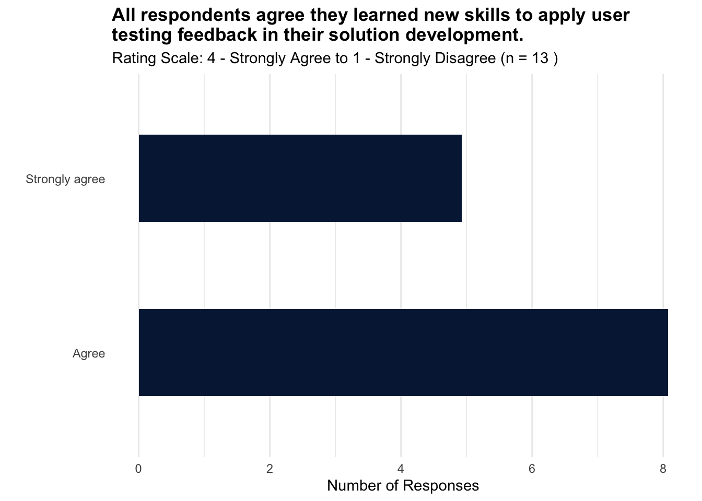

Graphs for post-test survey analysis for city governments.
Participant Background
Q3. Which city/county are you representing?
Akron, OH and Macon-Bibb County, GA are the most represented in the survey, each with 4 responses.
Miami-Dade County, FL follows with 3 responses.
Detroit, MI has the fewest responses, with only 2.
Code
# Set a CRAN mirroroptions(repos =c(CRAN ="https://cloud.r-project.org"))# Install necessary packages# install.packages("magrittr")# install.packages("dplyr")# install.packages("ggplot2")# install.packages("knitr")# install.packages("KableExtra")# Load the packageslibrary(magrittr)library(dplyr)library(ggplot2)library(knitr)library(kableExtra)# Read the data from the CSV filecohort3FinalGov <-read.csv("~/Documents/R Projects/TOPC-impact-evaluation-dashboard/Cohort 3/cohort3FinalGov2.csv")# Analyze and visualize the "q3" columnq3_summary_df <- cohort3FinalGov %>%group_by(q3) %>%summarise(Frequency =n())# Calculate total number of responses for the titletotal_responses <-sum(q3_summary_df$Frequency)names(q3_summary_df)[1] <-"City"# Order cities by frequency and converting to factorq3_summary_df <- q3_summary_df %>%mutate(City =factor(City, levels = City[order(-Frequency)]))# Plot the dataggplot(q3_summary_df, aes(x = City, y = Frequency)) +geom_bar(stat ="identity", fill ="#6eaddc", width =0.5) +coord_flip() +labs(title =paste("All city governments participated in the survey with highest from Akron and Macon-Bibb County (n =", total_responses,")."),x ="",y ="Number of Responses") +theme_minimal() +theme(panel.grid.major.y =element_blank(), panel.grid.minor.y =element_blank(),plot.title =element_text(face ="bold"))

Code
# | echo: falsesummary(q3_summary_df)
City Frequency
Akron, OH :1 Min. :2.00
Macon-Bibb County, GA:1 1st Qu.:2.75
Miami-Dade County, FL:1 Median :3.50
Detroit, MI :1 Mean :3.25
3rd Qu.:4.00
Max. :4.00
Code
# kable(summary(q3_summary_df), "html")
Goal 1: Participant Awareness and Knowledge
Goal 2: Participant Confidence and Competence
Goal 3: Participant Recognition and Application of Methods
Goal 4: Participant Satisfaction and Intention to Action
Q4. I learned new skills in community research practices, such as leading interviews and conducting surveys, during this program.
Code
# Analyzing and visualizing the "q4" columnq4_summary_df <- cohort3FinalGov %>%group_by(q4) %>%summarise(Frequency =n())# Calculate total number of responsestotal_responses <-sum(q4_summary_df$Frequency)# Plotting the dataggplot(q4_summary_df, aes(x = q4, y = Frequency)) +geom_bar(stat ="identity", fill ="#6eaddc", width =0.5) +coord_flip() +labs(title ="All respondents agree they learned new skills in community research practices.",subtitle =paste("Rating Scale: 1 - Strongly Agree to 4 - Strongly Disagree (n =", total_responses, ")"),x ="",y ="Number of Responses") +theme_minimal() +theme(panel.grid.major.y =element_blank(), panel.grid.minor.y =element_blank(),plot.title =element_text(face ="bold"))

Code
# | echo: falsesummary(q4_summary_df)
q4 Frequency
Length:2 Min. : 3.00
Class :character 1st Qu.: 4.75
Mode :character Median : 6.50
Mean : 6.50
3rd Qu.: 8.25
Max. :10.00
Q5. I learned skills to promote equity and foster inclusive spaces in my work.
Code
# Analyze and visualize the "q5" columnq5_summary_df <- cohort3FinalGov %>%group_by(q5) %>%summarise(Frequency =n())# Calculate total number of responsestotal_responses <-sum(q5_summary_df$Frequency)# Plotting the dataggplot(q5_summary_df, aes(x = q5, y = Frequency)) +geom_bar(stat ="identity", fill ="#6eaddc", width =0.5) +coord_flip() +labs(title =paste("All respondents agree they learned skills to promote equity and foster inclusive spaces in their work (n =", total_responses, ")."),subtitle ="Rating Scale: 1 - Strongly Agree to 4 - Strongly Disagree",x ="",y ="Number of Responses") +theme_minimal() +theme(panel.grid.major.y =element_blank(), panel.grid.minor.y =element_blank(),plot.title =element_text(face ="bold"))

Code
# | echo: falsesummary(q5_summary_df)
q5 Frequency
Length:2 Min. :4.00
Class :character 1st Qu.:5.25
Mode :character Median :6.50
Mean :6.50
3rd Qu.:7.75
Max. :9.00
Q6. I learned new skills in applying user testing feedback to shape the development of our solution.
Code
# Analyze and visualize the "q6" columnq6_summary_df <- cohort3FinalGov %>%group_by(q6) %>%summarise(Frequency =n())# Calculate total number of responsestotal_responses <-sum(q6_summary_df$Frequency)# Plotting the dataggplot(q6_summary_df, aes(x = q6, y = Frequency)) +geom_bar(stat ="identity", fill ="#6eaddc", width =0.5) +coord_flip() +labs(title ="All respondents agree they learned new skills to apply user testing feedback in their solution development.",subtitle =paste("Rating Scale: 1 - Strongly Agree to 4 - Strongly Disagree (n =", total_responses, ")"),x ="",y ="Number of Responses") +theme_minimal() +theme(panel.grid.major.y =element_blank(), panel.grid.minor.y =element_blank(),plot.title =element_text(face ="bold"))

Code
# | echo: falsesummary(q6_summary_df)
q6 Frequency
Length:2 Min. :5.00
Class :character 1st Qu.:5.75
Mode :character Median :6.50
Mean :6.50
3rd Qu.:7.25
Max. :8.00
Q6. I learned new skills in applying user testing feedback to shape the development of our solution.